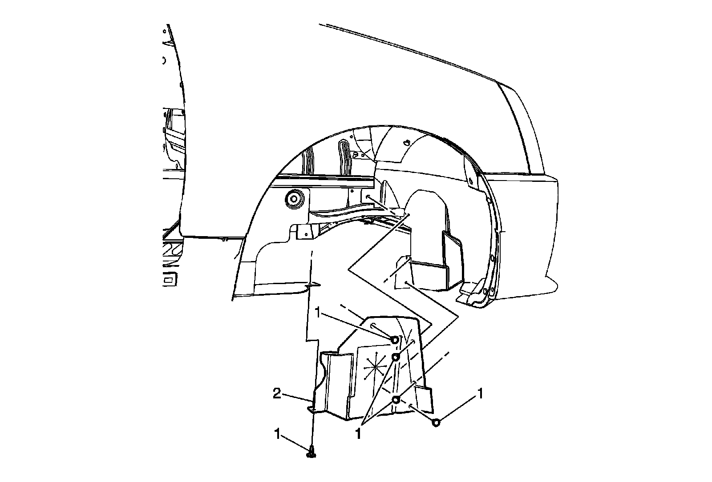
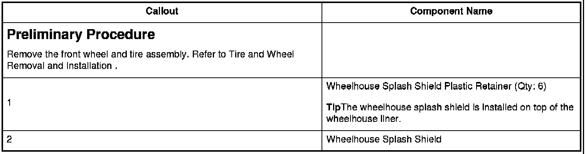

Operation CHARM
: Car repair manuals for everyone.
Home
>>
Cadillac
>>
2008
>>
SRX AWD V8-4.6L
>>
Repair and Diagnosis
>>
Body and Frame
>>
Fender
>>
Rear Fender
>>
Rear Fender Liner
>>
Service and Repair
>>
Wheelhouse Splash Shield Replacement (R1T, R1X)
Wheelhouse Splash Shield Replacement (R1T, R1X)
Wheelhouse Splash Shield Replacement (R1T, R1X)


Preliminary Procedure
Tip
The wheelhouse splash shield is installed on top of the wheelhouse liner.